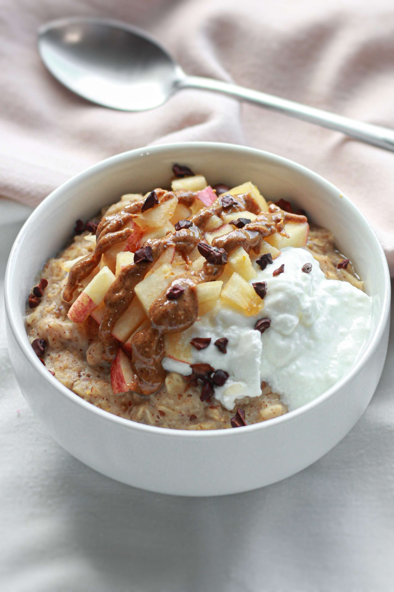

Oatmeal

Description
Ingredients
- old fashioned quaker oat
- 1 cup milk
- 1 teaspoon honey
- 1 cup water
- Desired toppings such as almonds, peanut butter
- 1 teaspoon ground cinnamon
Directions
- Combine oats, milk, water, salt, and cinnamon in a medium saucepan. Bring to a boil, then reduce heat to low.
- Simmer uncovered for 3 to 5 minutes until thickened, stirring occasionally. Remove from heat and let cool slightly.
- Divide equally between two bowls. Drizzle each serving with 1/2 teaspoon honey. Add additional desired toppings and serve..